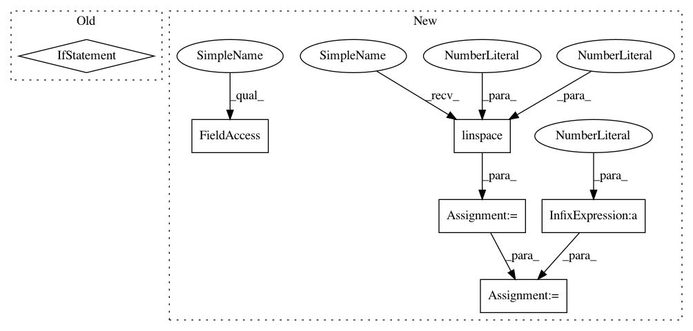

594882a5c0da72e0175319ea7cb07d373687ff18,statsmodels/graphics/gofplots.py,,_fmt_probplot_axis,#Any#Any#Any#,793
Before Change
There is no return value. This operates on `ax` in place
_check_for_ppf(dist)
if nobs < 50:
axis_probs = np.array([1, 2, 5, 10, 20, 30, 40, 50, 60,
70, 80, 90, 95, 98, 99, ]) / 100.0
elif nobs < 500:
axis_probs = np.array([0.1, 0.2, 0.5, 1, 2, 5, 10, 20, 30, 40, 50, 60,
70, 80, 90, 95, 98, 99, 99.5, 99.8,
99.9]) / 100.0
else:
axis_probs = np.array([0.01, 0.02, 0.05, 0.1, 0.2, 0.5, 1, 2, 5, 10,
20, 30, 40, 50, 60, 70, 80, 90, 95, 98, 99,
99.5, 99.8, 99.9, 99.95, 99.98, 99.99]) / 100.0
axis_qntls = dist.ppf(axis_probs)
ax.set_xticks(axis_qntls)
ax.set_xticklabels(axis_probs*100, rotation=45,
rotation_mode="anchor",
After Change
There is no return value. This operates on `ax` in place
_check_for(dist, "ppf")
axis_probs = np.linspace(10, 90, 9, dtype=float)
small = np.array([1.0, 2, 5])
axis_probs = np.r_[small, axis_probs, 100 - small[::-1]]
if nobs >= 50:
axis_probs = np.r_[small / 10, axis_probs, 100 - small[::-1] / 10]
if nobs >= 500:
axis_probs = np.r_[small / 100, axis_probs, 100 - small[::-1] / 100]
axis_probs /= 100.0
axis_qntls = dist.ppf(axis_probs)
ax.set_xticks(axis_qntls)
ax.set_xticklabels(
In pattern: SUPERPATTERN
Frequency: 3
Non-data size: 6
Instances
Project Name: statsmodels/statsmodels
Commit Name: 594882a5c0da72e0175319ea7cb07d373687ff18
Time: 2020-07-22
Author: kevin.k.sheppard@gmail.com
File Name: statsmodels/graphics/gofplots.py
Class Name:
Method Name: _fmt_probplot_axis
Project Name: nl8590687/ASRT_SpeechRecognition
Commit Name: b86b5661fc01a6204b3eb2a455a341e135db8270
Time: 2018-06-15
Author: 3210346136@qq.com
File Name: general_function/file_wav.py
Class Name:
Method Name:
Project Name: freelunchtheorem/Conditional_Density_Estimation
Commit Name: 4f9f28da19466e18165feb5a3dab0e82f686b926
Time: 2019-01-13
Author: jonas.rothfuss@gmx.de
File Name: tests/unittests_estimators.py
Class Name: TestConditionalDensityEstimators_2d_gaussian
Method Name: test_LSCD_with_2d_gaussian